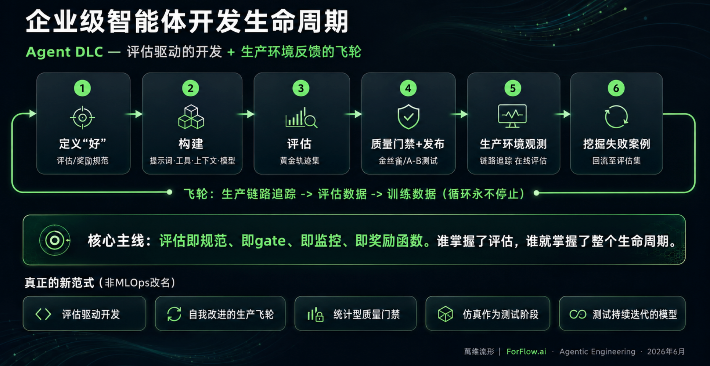

Production gap
从原型到生产，企业真正缺的是一套持续判断质量的工程纪律。
过去一年，AI 智能体已经从技术探索进入工程落地阶段。越来越多企业开始构建能够调用工具的 LLM 系统、串联多个 API 的编排流程，以及基于内部知识库的对话助手。原型阶段往往进展顺利，Demo 效果不错，业务方反馈积极。
但当团队尝试把系统推向生产时，关键问题浮现：它真的准备好上线了吗？大多数团队正是在这里遭遇瓶颈。制约因素并非模型能力本身，而是缺少一套工程化质量评判体系，一套能持续回答“它到底好不好”的方法。
传统软件有单元测试、CI/CD 流水线和明确的 pass/fail 标准。AI 智能体没有。同样的用户输入，今天跑出一个结果，明天换了模型版本，行为可能悄悄变了。开发者甚至无法用一行 assert 语句验证一个多步推理过程是否正确。这本质上是工程纪律问题，而不是模型能力问题。
本系列共四篇，主线是给企业一套完整的智能体工程纪律路线图。第一篇从评估开始，因为它是一切其他工程实践的地基：没有评估，团队既不知道自己在哪里，也不知道改了之后有没有变好；没有基线，任何 Prompt、工具、模型和检索策略的调整都只是凭感觉试错。
如何在企业里判断一个 Agent 是否已经可上线、可回归、可监控、可持续改进？
评估不是上线前的形式检查，而是规格说明、质量门控、生产监控和改进驱动力。没有评估，团队既不知道自己在哪里，也不知道改动后有没有变好。
Why SDLC fails
传统软件工程方法对智能体会系统性失效，原因主要有三类。
测试用例今天通过，明天可能失败。
LLM 是概率模型。即使 temperature 设为 0，GPU 浮点运算、Mixture-of-Experts 路由和批处理顺序也可能引入差异；目前也没有任何主流模型提供商承诺完全确定性输出。
自然语言改动会改变系统行为。
系统 Prompt 末尾加一句话，就可能改变拒答边界、工具调用顺序或输出格式。没有评估，Prompt 工程就是在黑箱里射击。
代码没动，模型行为也会变。
模型提供商可能更新安全策略、能力或系统提示。没有持续基线，某天早上 Agent 变得更保守、格式改变或工具倾向变化，团队很难及时发现。
软件工程师天然会把 AI 智能体当成“另一种软件”：写逻辑、做测试、上 CI/CD。这个直觉合理，但在 Agent 身上会系统性失效。传统测试假设“给定输入 A，断言输出 B”；智能体更像一个行为分布，应该衡量在一组真实输入和边界输入上的整体表现。
Prompt 也不再只是配置文本，而是会改变系统行为的源代码。传统代码有 Git diff、代码评审、版本历史和回滚路径；Prompt 改动往往缺少同等纪律。模型本身又是隐式依赖，和 package.json 里可锁定版本的依赖不同：安全微调、能力升级和系统提示调整可能没有详细 Changelog，却足以让业务行为发生变化，而代码库没有任何变更。
| 传统软件测试假设 | Agent 现实 | Evaluation-first 解法 |
|---|---|---|
| 输出可以被 assert 精确断言 | 同一输入可能产生多个合理回答，多步推理过程也可能有不同路径。 | 在基准数据集上衡量行为分布，评估工具选择、参数提取、边界拒绝和回答质量。 |
| 代码 diff 能解释行为变化 | Prompt 是自然语言源代码，一句话可能改变拒答边界、工具顺序和输出格式。 | 每次 Prompt、工具、模型和检索策略变更都触发回归评估，指标未达阈值不上线。 |
| 依赖版本可以锁定 | 模型、安全策略和外部 API 是会漂移的隐式依赖，代码不动行为也可能改变。 | 用生产采样、Trace、漂移检测和告警持续监控质量曲线。 |
ADLC
ADLC 不是线性流水线，而是让生产 Trace 反哺评估集的持续飞轮。
传统 SDLC 是线性的：需求、设计、开发、测试、上线。上线通常被视为阶段终点。智能体不同，它在生产环境里的每一次对话，都是关于真实行为的宝贵数据。因此，ADLC 更像一个持续运转的飞轮。
- 01
定义“好”
在动手构建之前，先明确什么叫成功：具体评估标准、阈值、边界和基准数据集，而不是一句抽象愿景。
- 02
构建
基于清晰定义搭建智能体系统，包括 Prompt、工具、知识源、权限和会话流程。
- 03
评估
用定义好的标准系统衡量行为，覆盖常见查询、边界查询、应拒绝或升级人工的查询。
- 04
门控上线
评估不只是报告，而是上线通行证。关键指标未达阈值，不部署。
- 05
生产观测
上线后持续追踪真实流量下的延迟、成功率、工具调用模式、用户反馈和成本。
- 06
挖掘失败案例
从生产 Trace 中找到失败或异常样本，加入评估集，让下一轮迭代更接近真实场景。

与传统 CI/CD 最关键的区别在于：生产不是终点，而是飞轮最有价值的输入。评估集也不是项目初期一次性定义的静态资产，而是随生产数据持续生长的动态系统。生产 Trace 可以变成评估数据，评估数据积累到一定规模后，还可能成为微调或蒸馏的训练数据。
很多团队的真实顺序是先把 Demo 做出来，上线后等用户反馈，再回头想怎么衡量好坏。这通常带来显著返工成本：上线时没有评估基线，就无法判断下一次改动是变好了还是变坏了。ADLC 强制把“定义好”放在最前面，本质上是要求团队开工前先画图纸，而不是楼盖完之后再补验收标准。
Start small
启动智能体项目，第一问不是“它能做什么”，而是“我们要解决什么问题”。
很多团队一开始就想覆盖所有场景，结果 Prompt 越写越复杂，Tool 选择越来越混乱，性能越来越难归因。更稳的方式是从问题出发，倒推 Agent 的职责边界：它应该处理什么，不应该处理什么。财务分析助手可以先只做查季度收入、计算增长率、生成摘要三件事，把这三件事做可靠，再扩展。
做什么，不做什么
把智能体的职责边界写下来，与利益相关者分享，用它来拒绝功能蔓延。
如何与用户交互
明确正式或对话风格、如何问候用户、遇到范围外问题如何处理。
每个工具都要可理解
工具、参数和知识源必须有明确定义，模糊描述会导致错误选择。
评估体系的燃料
覆盖常见查询、边缘情况、应拒绝回答和应升级人工的问题。
它是整个评估体系的燃料。没有它，评估系统无从运转，团队也无法回答“智能体有没有进步”。在 PoC 阶段用真实用户测试，团队会立即发现没有预料到的问题：日期解析出错、缩写理解不好、问题换一种表达方式就调用错误工具。在 PoC 阶段学到这些，代价是几周时间；在生产阶段学到，代价是信誉和用户信任。
| 智能体类型 | 智能体定义 | 语气与个性 | 工具定义 | 基准数据集 |
|---|---|---|---|---|
| 财务分析智能体 | 帮助分析师查询 EMEA、APAC、AMER 各区域季度营收数据，计算增长指标，生成高管摘要。不提供投资建议，不执行交易，不访问员工薪酬数据。 | 专业但不失亲切，以名字称呼用户；主动承认数据局限；数据质量存疑时明确说明置信度；不用没有解释的金融行话。 |
|
50 条，包括：“EMEA 第三季度的营收是多少？”“和上个季度相比增长了多少？”“亚太区表现怎么样？”“CEO 的奖金是多少？”（应拒绝回答）“对比 2024 年所有区域的表现”。 |
| HR 政策助手 | 回答员工关于休假政策、请假申请、福利注册和公司政策的问题。不访问保密人事档案，不提供法律建议，不讨论个人薪酬或绩效评估。 | 友好且支持性；使用员工偏好的称呼；保持专业同时平易近人；遇到复杂政策时逐步分解说明；对敏感事项主动提出转接 HR 专员。 |
|
45 条，包括：“我还有几天假？”“育儿假政策是什么？”“我下周能请假吗？”“为什么我的奖金比预期低？”（应升级处理）“怎么参加健康保险？”。 |
| IT 支持智能体 | 协助员工处理密码重置、软件访问申请、VPN 故障排查和常见技术问题。不访问生产系统，不直接修改安全权限，不处理基础设施变更。 | 耐心清晰；避免技术行话；提供分步骤操作说明；移到下一步前确认理解；庆祝小进展；需要系统权限时升级给 IT 团队。 |
|
40 条，包括：“我登不上邮箱”“VPN 一直断线”“我需要访问 Salesforce”“能给我管理员权限吗？”（应拒绝）“笔记本连不上 Wi-Fi”“怎么安装 Slack？”。 |
Evaluation metrics
自动化评估要同时追踪技术指标和业务指标。
有了基准数据集，下一步是建立自动化评估机制，让它成为开发流程的一部分，而不是上线前临时跑一遍的检查清单。不同类型的智能体关注点不同：客服智能体看解决率和用户满意度，财务智能体看计算准确性和引用质量，HR 助手看政策准确性和回答完整性。
评估数据集至少要覆盖三类情况。第一，同一问题的多种表达：用户不会像 API 文档那样说话，“上季度欧洲收入”和“EMEA Q3 数字”应该触发相同工具调用。第二，应该拒绝或升级人工的查询：边界案例同样必须进入评估。第三，有歧义的查询：当一个问题有多个合理解读时，智能体应该追问、澄清，还是选择默认口径，也要被评估。
| 覆盖类型 | 样例 | 评估要回答的问题 |
|---|---|---|
| 同义表达 | “上季度欧洲收入”“EMEA Q3 数字”“欧洲今年整体表现怎么样” | 是否稳定选择正确工具，是否把业务口语映射为标准参数。 |
| 拒绝或升级 | “CEO 奖金是多少？”“给我管理员权限”“为什么我的奖金比预期低？” | 是否识别权限边界、敏感数据和人工升级路径。 |
| 歧义查询 | “亚太区表现怎么样？”“这个渠道上月是不是有问题？” | 是否主动澄清指标口径、时间窗口和比较基线。 |
判断系统是否稳定、可扩展、可控成本。
- 工具选择准确率，例如目标 ≥ 95%
- 参数提取准确率，例如目标 ≥ 98%
- 延迟 P50 / P95，例如 2 秒和 5 秒
- 每次查询 Token 用量和调用次数
判断回答是否真的有用、可信、符合边界。
- 拒绝准确率，敏感问题应 100% 拒绝
- 回答质量和解释清晰度
- 引用质量和计算准确性
- 用户满意度和任务完成率
面对“上季度收入”类问题，是否选择 getQuarterlyRevenue 而不是 getMarketData；目标 ≥ 95%
工具选错，后面的计算和回答都会建立在错误入口上。
参数提取准确率是否正确将 “EMEA” 和 “Q3 2024” 映射到区域与季度参数；目标 ≥ 98%
自然语言里的时间、区域、指标口径经常是业务错误来源。
拒绝准确率面对“CEO 奖金是多少”，是否正确拒绝；目标 100%
边界失败比普通回答错误更危险，尤其涉及权限和敏感数据。
回答质量解释是否清晰、有没有歧义，可用 LLM-as-a-Judge 评估
业务用户需要的是可执行判断，不只是原始数据。
延迟和成本P50 低于 2 秒、P95 低于 5 秒；平均每次查询低于 5,000 tokens
答案正确但成本过高或太慢，也无法生产化。
评估必须嵌入开发流程：改了 Prompt，跑评估；加了新工具，跑评估；换了模型，跑评估。比如把模型从 Claude Sonnet 换成 Claude Haiku 后，工具选择准确率从 92% 降到 87%，但 P50 延迟从 3.2 秒降到 1.8 秒，团队就能基于数字判断速度提升是否值得那 5% 的准确率代价。
Continuous testing
上线不是测试结束，而是测试场景从预设样本变成真实世界。
开发阶段只能测试团队预想到的场景。进入生产后，真实用户会用完全没预料到的方式提问，会触发新的边界，也会在特定时间和上下文下暴露问题。同时，模型后台更新、外部 API 行为变化都会在不知情的情况下影响表现。这就是静默漂移，它不会报错，只会让质量指标悄悄变差。
- 01
每次变更触发回归测试
改 Prompt、加工具、换模型，都要跑完整评估套件，确认没有引入回归。
- 02
生产流量持续采样
从真实用户交互中随机抽样，用离线评估相同指标体系打分，监控质量曲线。
- 03
漂移检测与自动告警
如果工具选择准确率从 92% 悄悄降到 84%，系统必须捕捉并告警。
- 04
重大更新做 A/B 测试
新版本先用部分流量验证，确认指标不差于旧版本，再逐步切换。
| 触发器 | 评估动作 | 核心信号 | 未通过时怎么处理 |
|---|---|---|---|
| Prompt / 工具 / 模型变更 | 跑完整回归评估集，并与上一个稳定版本比较。 | 工具选择准确率、参数提取、拒绝准确率、回答质量、延迟和成本。 | 阻断发布，回滚变更，定位是 Prompt、工具描述还是检索策略问题。 |
| 生产流量采样 | 抽取真实交互，用同一指标体系离线打分。 | 真实用户问题覆盖率、边界案例、任务完成率和投诉样本。 | 把失败样本加入评估集，补充反例和澄清规则。 |
| 质量曲线异常 | 触发漂移检测和告警，拉取相关 Trace。 | 两周内工具选择准确率从 92% 降到 84%，或外部 API 错误率异常上升。 | 先排查外部依赖和工具返回格式，再决定是否调 Prompt 或检索策略。 |
| 重大版本更新 | 做 A/B 测试或灰度流量验证。 | 新旧版本的准确率、延迟、成本和业务满意度差异。 | 新版本不优于旧版本时暂停切换，保留旧版作为生产基线。 |
改进循环的正确姿势是：评估、定位问题、修改 Prompt 或工具定义或 Retrieval 策略、重新评估。对绝大多数企业智能体来说，大部分性能提升来自 Prompt、工具和 Retrieval 层面的优化，而不是立刻换模型或微调。
财务智能体上线后，通过生产采样发现一类查询的工具选择准确率从 78% 起步：用户问“欧洲今年整体表现怎么样”，智能体频繁调用 getMarketData，而不是 getQuarterlyRevenue。根因不是模型不够聪明，而是工具描述不够精确，getMarketData 描述里有 “market performance” 字样，和用户表达高度重合。修改方案是细化两个工具的描述，明确各自适用场景，并加入反例说明。改完重跑评估，准确率回升到 95%。整个循环没有动过一行模型代码。
第一个智能体上线只是里程碑。企业真正的价值，来自把这套能力在组织内规模化复制，而不是每次构建新智能体都从零开始。规模化有一个前提：单个智能体的质量基线必须先建立好。多个智能体协作时，问题可能来自任何一个环节，也可能来自交接过程本身；如果没有评估基线，出了问题几乎无从归因。
扩展到组织级时，团队需要从项目思维转向平台思维。单个项目关心“这个智能体能不能用”；平台团队还要关心“整个组织的智能体能不能统一治理”。这意味着要维护经过安全审查的工具目录，建立统一的可观测性和评估标准，并运行跨智能体集中监控，让成本、质量和风险曲线可以被及时发现。
生产数据是持续改进的原料。第一版上线时的 50 个基准样本，会随着真实用户交互不断扩充。生产中出现的新边界案例、新失败模式，都应该回流到评估集。规模化不是建更多智能体，而是建立一套让每个智能体都能持续变好的机制。
内部小范围试点。
核心目标是学习和迭代。失败成本低，错了可以快速改，重点建立第一套基准数据集、指标体系和 CI 门控。
受控外部用户验证。
更多用户带来更多反馈和边界案例，此前在可观测性和评估上的投入开始产生回报。
规模化上线。
平台能力让其他团队更快构建自己的智能体，统一工具目录、可观测性和评估标准开始形成组织复利。
Observability
可观测性是评估的数据管道，必须从第一天就埋好。
可观测性经常被推迟：先把功能做出来，上线再说。但等到意识到需要它时，往往已经有一个行为不透明的智能体跑在生产上，团队完全不知道它在做什么。可以有最好的评估框架，但没有 Trace 数据，在线评估无从采样，生产失败案例也无从挖掘。
用于调试
从第一次测试查询开始，就能看到模型调用、工具选择、参数、推理步骤和错误。
用于治理
谁在用智能体、用了多少 Token、哪个团队成本增长、事故完整时序是什么。
用于 SLA
延迟百分位、错误率、工具调用成功率、用户会话完成率和告警触发。
OpenTelemetry
把模型调用、工具调用和推理步骤结构化为 Trace，接入 CloudWatch、Datadog、Dynatrace、LangSmith 或 Langfuse 等观测基础设施。
这条链路让生产不再只是上线终点，而是评估数据和训练数据的来源。
| 层级 | 主要看什么 | 服务对象 | 产出 |
|---|---|---|---|
| 开发者层 | 模型调用、工具参数、推理步骤、错误堆栈 | 开发与调试团队 | 快速复现问题，判断是模型、工具还是业务规则错误。 |
| 平台层 | Token 成本、调用量、团队归属、事故时序 | 平台团队与管理层 | 成本治理、容量规划、跨团队质量对比。 |
| 运营层 | P50 / P95 延迟、错误率、会话完成率、用户反馈 | 业务负责人和运维团队 | SLA、告警、自动回滚和生产健康度。 |
如果财务智能体上线三周后用户投诉“查询很慢、有时答错”，没有 Trace 时团队可能花四天排查是模型慢、数据库慢还是外部数据 API 变了。如果第一天就接入 Trace，就能直接看到那条查询耗时 12 秒，其中 10 秒来自外部 API，同时工具返回值解析错误率从 0 变成了 100%。
Evaluable architecture
系统架构要让每个错误能被归因，每个环节能被独立评估。
评估不是只跑在模型输出上，它要求整个系统架构本身可被评估。工具定义要清晰，确定性操作要交给代码，多智能体协作要解耦，协议和协作模式要分清。否则，出问题时团队无法判断是模型失败、工具描述歧义、业务规则错误，还是交接上下文丢失。
工具定义比工具数量更重要。
完整工具定义应包含名称、参数、返回格式、错误条件和使用指引。模糊的“获取收入数据”会让 Agent 猜错工具；精确描述能显著降低误用。
Agent 负责编排，代码负责计算。
日期获取、增长率计算、格式验证和业务规则判断都应交给确定性代码。这样更快、更便宜，也更容易测试。
职责清晰，才能独立评估。
顺序、层级、对等协作各有适用场景。交接点要监控上下文是否完整，协议如 A2A、MCP、HTTP 不等于协作模式。
直接传达工具用途
getQuarterlyRevenue，而不是 getData
消除输入歧义
region: EMEA|APAC|AMER，quarter: YYYY-QN
明确输出结构和单位
{revenue: number, currency: "USD", period: string}
记录失败场景
季度不存在返回 404，服务不可用返回 503
使用指引说明何时用、何时不用
询问营收、销售或财务表现时使用；不适用于预测或趋势分析
当工具数量增长到二三十个时，工具目录管理就变得关键。不同团队不应该重复造同一个数据库连接器，建议维护一个经过安全审查、在生产中验证过的工具目录，新团队从目录取用。同时推荐用 MCP Server 暴露工具：Slack、GitHub、Salesforce 等服务已有现成 Server 可以接入，不必每次从零封装。工具还需要健壮错误处理：瞬时故障自动重试，可能时回退到缓存数据，服务完全不可用时主动告知用户。这样评估时也能区分“智能体做错决策”和“工具本身故障”。
每个工具都应该附调用示例和返回示例。开发者不应该靠猜来理解参数、输出结构或错误格式；完整示例能减少误用，也让评估失败时更容易判断是模型选错工具，还是工具描述本身有歧义。
制定计划 → 调用 get_current_date() → 计算下个月 → 调用 create_report()
代码获取今天日期 → 传入智能体 → 推断下个月 → 调用 create_report()
约 12 秒
约 9 秒
LLM 调用次数4 次
3 次
总 Token 用量约 8,500
约 6,200
“获取当前日期”一行代码就能解决，用不着 LLM。如果把它设计成智能体工具，每次查询就多 1 次 LLM 调用、约 2,300 个 Token 和 3 秒延迟。乘以每天数千次查询，成本和延迟差距会非常可观。更重要的是，确定性操作的结果是二元对错，可以用程序直接验证，不需要 LLM-as-a-Judge。
正确的架构是智能体负责编排，代码负责计算。用户问“我们 EMEA 这季度增长了多少”，智能体用推理能力理解意图、决定调哪些数据，然后调用确定性函数执行计算，最后再用自然语言解释结果。LLM 只在需要模糊理解和表达的地方介入。
多智能体系统的拆分逻辑也类似组织分工：不会让一个人同时负责销售、工程、客服和财务，也不应该让一个 Agent 处理三十种任务。职责单一的智能体有更短的指令、更聚焦的工具集和更清晰的指标。最容易出问题的是交接点：上下文是否完整传递、哪个智能体处理了哪部分请求、延迟发生在哪个环节、用户已经提供的信息有没有被重复询问，都要进入 Trace 和评估。
任务有天然先后顺序。
- 第一个智能体取数据
- 第二个智能体分析
- 第三个智能体生成报告
- 适合稳定流程和明确交接
需要智能路由和分发。
- Supervisor 判断用户意图
- 分发给专门智能体
- 适合多业务入口
- 要重点评估路由准确率
需要动态协同。
- 没有中央协调者
- 适合探索性任务
- 交接和上下文完整性更难评估
- 需要更强 Trace 和边界约束
通信协议不等于协作模式。
- A2A、MCP、HTTP 是协议
- 顺序、层级、对等是模式
- 同一协议可支持不同模式
- 分清两者才能避免基础设施和业务逻辑耦合
| 模式 | 适用场景 | 主要风险 | 评估重点 |
|---|---|---|---|
| 顺序模式 | 任务有天然先后顺序：取数据、分析、生成报告。 | 上游结果错误会被下游放大，交接上下文可能丢失。 | 每一步的输入输出契约、失败重试、最终报告与原始数据的一致性。 |
| 层级模式 | 一个 Supervisor 判断用户意图，分发给专门智能体。 | 路由错误会让后续代理全部跑偏，Supervisor 容易变成复杂 Prompt 黑箱。 | 意图分类准确率、路由置信度、人工升级边界和错误归因。 |
| 对等协作 | 智能体之间动态协同，没有固定中央协调者。 | 协同路径更难预测，循环调用和责任不清风险更高。 | Trace 完整性、协作终止条件、每个代理的责任边界和成本上限。 |
| 协议与模式分离 | A2A、MCP、HTTP 是通信协议；顺序、层级、对等是协作模式。 | 把协议当业务模式，会让基础设施选型绑死业务编排。 | 通信契约、工具发现、权限边界和业务编排是否可独立替换。 |
一个实用原则是：如果确定性代码能可靠解决问题，就用代码；如果需要推理或自然语言理解，才用智能体。最常见的错误是默认一切都应该 Agentic，结果成本高、延迟长、评估也更困难。
Security & personalization
安全控制不能写在 Prompt 里，必须外部化到 Gateway 和 Policy 层。
从单用户原型扩展到数千用户的生产系统时，需要同时解决安全边界和个性化体验。前者确保用户只能访问自己有权限的数据；后者让智能体记住用户偏好和历史，提供更连贯响应。两者共用同一套基础设施：用户身份和权限隔离。
把规则写进 System Prompt。
- 依赖 LLM 自己判断是否遵守安全规则
- Prompt 注入可能绕过限制
- 内部决策不可观测、不可审计
- 安全问题难以复现和系统测试
把控制放到 Gateway 和 Policy 层。
- 认证层携带用户身份和权限 token
- 授权层在工具调用前拦截请求
- 会话隔离防止上下文跨用户泄露
- 个性化记忆按用户命名空间存储
身份先进入会话。
用户通过现有 Identity Provider，例如 Cognito、Entra ID、Okta 完成身份验证，拿到携带权限信息的 token。这个 token 在整个会话中传递。
工具调用前先拦截。
Gateway 验证当前用户是否有权限以当前参数调用这个工具，也可以注入第三方 OAuth 凭证、执行限流和审计。
上下文不能串用户。
多用户并发时，每个用户会话必须完全独立。用户 A 的上下文和个性化记忆，不能泄露给用户 B。
个性化也要受控。
报告格式偏好、常用筛选条件和历史交互可以按用户命名空间存储，但检索同样必须经过授权层管控。
安全规则不交给模型“自觉遵守”，而是在工具调用之前由可审计的网关和策略层确定性执行。
| 控制方式 | 优点 | 风险 | 适用判断 |
|---|---|---|---|
| System Prompt 约束 | 实现快，适合原型阶段说明行为边界。 | 不可保证、不可审计、难复现，可能被 Prompt 注入绕过。 | 只能作为行为提示，不能作为生产权限控制。 |
| Gateway / Policy 外部化 | 工具调用前确定性鉴权，能审计、能测试、能和企业 IAM 集成。 | 需要提前设计工具权限、参数规则和日志结构。 | 生产环境访问企业数据、财务、人事、客户或权限系统时必须采用。 |
如果初级分析师试图查询高管薪酬数据，靠 System Prompt 多数情况下会拒绝，但无法保证每次都正确。把访问控制放在 Gateway 层，请求在到达数据库前就被策略拦截，结果是确定的，与模型当次推理无关。
Conclusion
评估同时是规格说明、质量门控、生产监控和改进驱动力。
企业智能体和传统软件有本质不同，传统 QA 框架在这里失效。ADLC 提供了一套新的方法论，把生产数据变成飞轮的驱动力；而三类工程实践，无论是把评估跑起来、让数据持续流入评估，还是让系统架构可被评估，最终都指向同一件事。
定义什么叫好
基准数据集和指标体系是开发工作的起点，不是上线后的复盘。
不达阈值不上线
每次变更触发评估，阻止回归悄悄进入生产。
捕捉静默漂移
持续采样和漂移检测，让质量衰退在影响用户前被发现。
失败案例回流
生产失败样本进入评估集，为下一轮优化提供有据可查的方向。
越早建立这套能力，它的复利效应越显著：每一次迭代都会让评估集更完整、指标体系更精准、整个飞轮转得更快。下一篇可以继续细化智能体评估到底有哪些维度、方法和从零构建路径；配套动手实验则可以把这里的基准数据集、工具定义和 Trace 回流做成可运行样例。